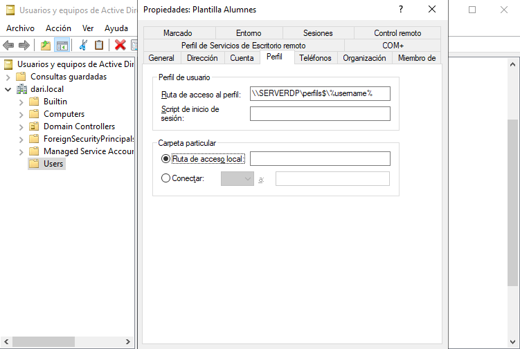
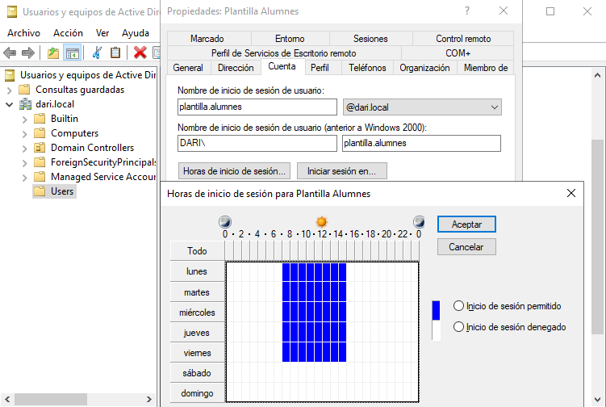

Implementación y administración del dominio
1 Implementar el dominio
El primer paso para centralizar la gestión de usuarios y recursos es instalar y configurar un controlador de dominio en un servidor Windows. Esto se hace a través del rol de Servicios de dominio de Active Directory (AD DS).
Preparar la máquina virtual
- Crear una máquina virtual con Windows Server 2019 o 2022.
- Asignar nombre al host.
- Configurar la IP de forma estática (no DHCP), por ejemplo:
10.0.2.20. - Establecer el nombre del equipo definitivo antes de unirlo al dominio.
- Desactivar el Firewall


1.1 Instalar el rol de Active Directory
- Abrir el Administrador del servidor.
- Hacer clic en Agregar roles y características.
- Seleccionar:
- Instalación basada en características o roles.
- El servidor local como destino.
- En roles, marcar Servicios de dominio de Active Directory (AD DS).
- Continuar hasta el final y hacer clic en Instalar.

Promocionar el servidor a controlador de dominio
- Una vez instalado el rol, en el Administrador del servidor, aparecerá una advertencia para promocionar el servidor.
- Hacer clic en Promover este servidor a controlador de dominio.
- Seleccionar:
- Agregar un nuevo bosque.
- Nombre del dominio raíz:
dari.local(puedes personalizarlo).
- Establecer una contraseña del modo de restauración (DSRM).
- Continuar con la configuración por defecto hasta el final.
- El sistema se reiniciará automáticamente al finalizar la promoción.

Verificar que el dominio funciona correctamente
- Iniciar sesión como administrador del dominio (
DARI\Administrador). - Abrir la consola "Usuarios y equipos de Active Directory".
- Verificar que el dominio
dari.localaparece y que el servidor está en la OUDomain Controllers.


Con esto, el controlador de dominio principal (DC1) queda configurado y listo para empezar a gestionar usuarios, grupos, equipos y políticas en red.
1.2 Administrar cuentas de usuario y cuentas de equipo
Una vez configurado el dominio, el siguiente paso es crear usuarios y preparar los equipos cliente que se unirán al dominio.
Crear cuentas de usuario en el dominio
- Abrir la consola Usuarios y equipos de Active Directory (
dsa.msc). - Dentro del dominio (
dari.local), clic derecho sobre Usuarios > Nuevo > Usuario. - Crear, por ejemplo, los siguientes usuarios:
alumne1– Nombre completo: Alumne 1alumne2– Nombre completo: Alumne 2
- Establecer una contraseña segura (ej.
Alumne123!) y desactivar la opción “El usuario debe cambiar la contraseña en el siguiente inicio de sesión” si se desea facilitar las pruebas. - Confirmar que los usuarios aparecen correctamente en el contenedor
Usuarios.

Crear cuentas de equipo (opcional)
Aunque las cuentas de equipo se crean automáticamente al unir un PC al dominio, también pueden precrearse:
- En la consola de AD, clic derecho en Computers > Nuevo > Equipo.
- Asignar un nombre como
CLIENTE-01. - (Opcional) Establecer qué usuario podrá unir ese equipo al dominio.
Esto puede ser útil si se quiere restringir quién tiene permiso para unir equipos al dominio.
Preparar la máquina cliente
- Iniciar una máquina virtual con Windows 10 o 11 Pro.
- Cambiar el nombre del equipo a algo identificable (ej.
CLIENTE-01). - Establecer una IP en la misma red del servidor, con la IP del DC como servidor DNS principal.
Ejemplo de configuración:
- IP: `10.0.2.21`
- Máscara: `255.255.255.0`
- Puerta de enlace: `10.0.2.1`
- DNS: `10.0.2.20` (IP del controlador de dominio)


Unir el equipo al dominio
- Desde Este equipo > Propiedades > Cambiar configuración > Cambiar...
- Seleccionar "Miembro de dominio" e introducir:
dari.local - Introducir las credenciales de un administrador del dominio.
- Reiniciar el sistema cuando lo pida.


Comprobar el inicio de sesión con usuarios del dominio
- En el cliente, después de reiniciar, seleccionar Otro usuario.
- Iniciar sesión como
dari\alumne1con la contraseña correspondiente. - Verificar que se crea un perfil nuevo y que el usuario accede al escritorio con sus permisos.


1.3 Centralizar la información personal con perfiles móviles
Un perfil móvil permite que los datos del usuario (escritorio, documentos, configuración del entorno) se almacenen en el servidor, no solo en el equipo local. Así, el usuario puede iniciar sesión en cualquier equipo del dominio y mantener su entorno.
Crear una carpeta compartida para perfiles
- En el controlador de dominio (DC), crea una carpeta en
E:\llamadaPerfils. - Clic derecho > Propiedades > Compartir > Uso compartido avanzado.
- Marca Compartir esta carpeta, y como nombre de recurso compartido escribe:
perfils$(el$lo hace oculto en la red). - En Permisos, añade el grupo
Usuarios del dominioy da control total. - Aplica y cierra.


Asignar ruta de perfil móvil a cada usuario
- Abre la consola Usuarios y equipos de Active Directory.
- Doble clic sobre
alumne1> pestaña Perfil. -
En el campo Ruta de perfil, introduce:
\\SERVERDP\perfils$\alumne1

Importante: usa el nombre de red (hostname o IP del servidor), no una ruta local.
Probar el funcionamiento
Se puede probar de varias formas, dependiende si existen mas máquinas "cliente".
- Desde un equipo cliente unido al dominio, inicia sesión con
alumne1. - Windows debería tardar un poco más en cargar la sesión, ya que está creando el perfil y sincronizándolo con el servidor.
- Crea un archivo en el escritorio o documentos.
- Cierra sesión y vuelve a iniciar en otro equipo del dominio (o reinicia el mismo).
- Verifica que el entorno del usuario y sus archivos se mantienen.
En este caso como solo tengo una maquina cliente pruebo de cerrar y volver a iniciar sesión para comprobar que el archivo se mantiene.

Tambien se puede verificar desde el servidor, donde se debe haber creado una copia de toda el perfil.
1.4 Crear y administrar grupos de seguridad
Los grupos de seguridad permiten aplicar permisos o directivas a varios usuarios a la vez, lo que facilita enormemente la administración. En este punto crearé grupos según roles y necesidades del dominio dari.local.
Crear grupos de seguridad
- Abrir la consola Usuarios y equipos de Active Directory (
dsa.msc). - Dentro de la OU
Usuarioso una unidad organizativa personalizada, hacer clic derecho > Nuevo > Grupo. - Crear, por ejemplo, los siguientes grupos:
ProfessorsAlumnes- Asegurarse de que el tipo sea Grupo de seguridad y el ámbito Global.


Añadir usuarios a los grupos
- Hacer doble clic en
alumne1, ir a la pestaña Miembro de. - Pulsar Agregar y escribir
Alumnes, luego aceptar. - Crear usuarios para profesores o técnicos y asignarlos a los grupos correspondientes.
Crear carpetas o recursos asociados a cada grupo
- En el servidor
SERVERDP, crear enE:\una carpeta llamadaDepartaments. -
Dentro de esa carpeta, crear subcarpetas como:
AlumnesProfessors
-
Hacer clic derecho en cada una > Propiedades > Seguridad.
- Eliminar entradas como
EveryoneoUsuarios. - Añadir el grupo correspondiente (ej.
Alumnes) y otorgarle los permisos adecuados, por ejemplo: - Lectura y escritura
- O solo lectura, según el uso


Probar el acceso según grupo
- Inicia sesión en un equipo cliente como
prof1. -
Accede a la ruta compartida (por ejemplo):
\\SERVERDP\Departaments\Professors -
Comprueba que no se puede acceder, modificar o visualizar los archivos según los permisos asignados al grupo y que no puede entrar en Alumnes.

1.5 Crear plantillas de usuario
Cuando se gestionan muchos usuarios con configuraciones similares (como alumnado de un centro), crear plantillas de usuario permite ahorrar tiempo y asegurar coherencia en la configuración.
Crear un usuario plantilla
- En la consola Usuarios y equipos de Active Directory, hacer clic derecho sobre la OU donde se crean los usuarios (por ejemplo,
Alumnes) > Nuevo > Usuario. - Introducir un nombre representativo como:
- Nombre:
Plantilla - Apellido:
Alumnes - Nombre de inicio de sesión:
plantilla.alumnes
- Nombre:
- Establecer una contraseña segura, como
Plantilla123!, y marcar:- El usuario no puede cambiar la contraseña
- La contraseña nunca expira
- Finalizar la creación del usuario.

Configurar propiedades comunes en la plantilla
Editar la cuenta plantilla.alumnes y establecer las opciones que se quieran copiar a nuevos usuarios:
- En la pestaña Miembro de, añadirla al grupo
Alumnat. - En la pestaña Perfil, establecer:
- Ruta del perfil móvil:
\\SERVERDP\perfils$\%username%
- Ruta del perfil móvil:
- En la pestaña Cuenta, configurar opciones como:
- Inicio de sesión permitido
- Horarios de acceso (si se desea restringir)



Crear nuevos usuarios basados en la plantilla
- Hacer clic derecho sobre el usuario
plantilla.alumnes> Copiar. -
Se abrirá un asistente para crear un nuevo usuario con las mismas configuraciones:
- Introducir datos reales: nombre, apellido, usuario, contraseña.
- El nuevo usuario heredará:
- Pertenencia a grupos
- Configuración de perfil
- Opciones de cuenta
-
Repetir el proceso para cada nuevo usuario.

Comprobar funcionamiento
Verificar que:
- Se ha unido automáticamente al grupo `Alumnes`.
- Tiene ruta de perfil móvil configurada.
- Las restricciones establecidas se mantienen.

1.6 Organizar los objetos del dominio mediante unidades organizativas (OUs)
Las Unidades Organizativas (OUs) permiten estructurar los objetos del dominio (usuarios, grupos, equipos) en contenedores lógicos. Esto facilita su administración, delegación de permisos y aplicación de políticas de grupo (GPO) de forma segmentada.
Crear las OUs
- Abrir la consola Usuarios y equipos de Active Directory.
- Clic derecho sobre el dominio
dari.local> Nuevo > Unidad organizativa. -
Crear al menos las siguientes OUs:
AlumnesProfessors
Puedes crear sub-OUs si quieres agrupar por curso, departament, aula, etc.
Mover objetos a sus OUs correspondientes
- Arrastrar o hacer clic derecho sobre cada objeto (usuario, grupo o equipo) > Mover.
- Colocar:
- Los usuarios
alumne1,alumne2en la OUAlumnes. - Los profesores (si existen) en la OU
Professors.
- Los usuarios

Beneficios de la estructura con OUs
- Permite aplicar GPO diferentes por tipo de usuario o equipo.
- Facilita el mantenimiento: todo está organizado y es localizable.
- Es posible delegar administración solo sobre una OU concreta (por ejemplo, permitir que un técnico solo gestione los
Alumnes).
Verificar la estructura
- Revisa que en la consola
dsa.mscse visualicen claramente las OUs con sus objetos bien distribuidos. - Si se ha creado una jerarquía de OUs, comprobar que tiene sentido para la administración real del entorno.
Organizar el dominio correctamente desde el principio es fundamental para evitar el caos en entornos reales. Una estructura bien pensada facilita enormemente la gestión a medio y largo plazo.
2.Configuración de seguridad (GPO)
2.1 Prevenir bloqueos de acceso no autorizados al dominio
Para evitar accesos indebidos o ataques de fuerza bruta en el entorno del dominio dari.local, es fundamental aplicar políticas de bloqueo de cuenta y otras configuraciones de seguridad que limiten los intentos fallidos de inicio de sesión.
Acceder a las directivas de seguridad del dominior
- Desde el servidor
SERVERDP, abrir la herramienta Group Policy Management (gpmc.msc). - Expandir el dominio
dari.local. - Clic derecho en Default Domain Policy > Editar.

Configurar directiva de bloqueo de cuenta
Dentro del editor de GPO, navegar hasta:
Configuración del equipo > Configuración de Windows > Configuración de seguridad > Directivas de cuenta > Directiva de bloqueo de cuenta
Modificar los siguientes parámetros:
- Umbral de bloqueo de cuenta: 3 intentos fallidos
- Duración del bloqueo de cuenta: 15 minutos
- Restablecer el contador de bloqueos: 15 minutos
Esto significa que si un usuario falla 3 veces al poner su contraseña, su cuenta quedará bloqueada durante 15 minutos.
Aplicar y probar la directiva
- Desde un equipo cliente, iniciar sesión con un usuario del dominio (
alumne1) introduciendo mal la contraseña 3 veces. - Verificar que el sistema muestra un mensaje de cuenta bloqueada.
- Esperar el tiempo configurado o desbloquear manualmente desde el servidor (en
dsa.msc> usuario > propiedades > desbloquear cuenta).

Reforzar la complejidad de contraseñas (opcional)
Desde la misma GPO (o una nueva), se puede aplicar también:
Configuración del equipo > Configuración de Windows > Configuración de seguridad > Directivas de cuenta > Directiva de contraseñas
Recomendaciones: - Longitud mínima: 8 caracteres - Debe cumplir con los requisitos de complejidad: Activado - Historial de contraseñas: recordar al menos 5
Estas políticas contribuyen a proteger el dominio de intentos de acceso no autorizados y garantizan una mejor higiene de seguridad en la red.